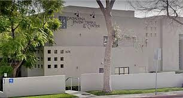
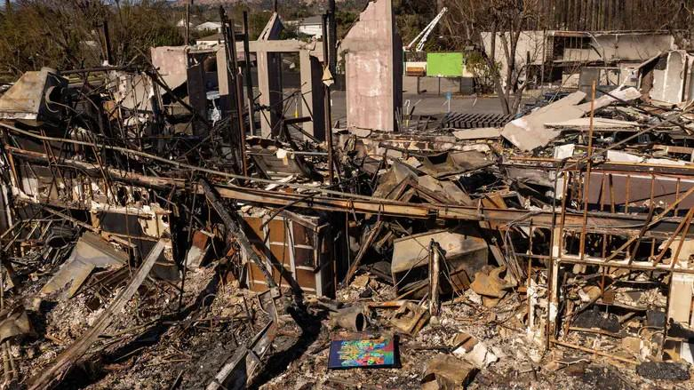
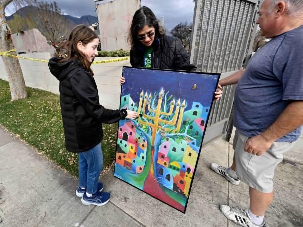
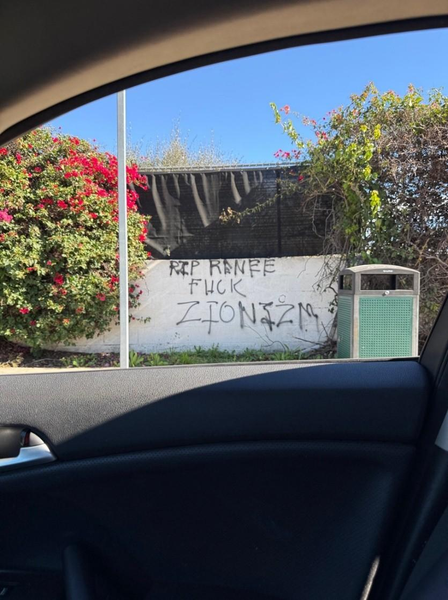
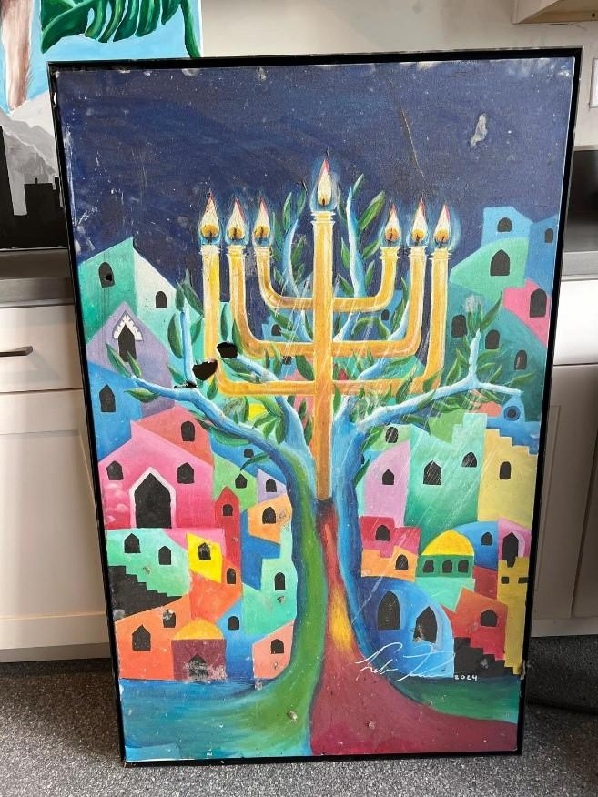
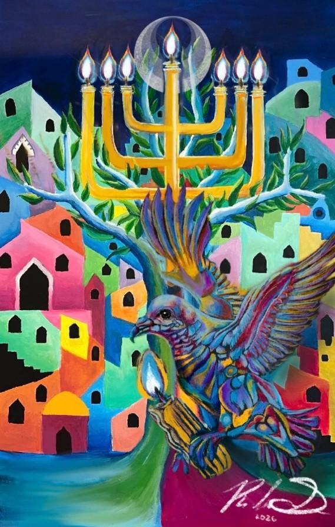

Pasadena, California
Author’s Note
A whole 365 days have passed since the event that reshaped the trajectory of my life and fully cemented in my heart that G*d exists. Much like the burning bush for Moses, my painting’s story was my sign that G*d is intentionally guiding me through this world. I hesitated so long to write this piece because I was trying to explain the unexplainable and unimaginable when I should have simply let the story speak for itself. The succession of miraculous events that allowed my painting to survive signaled to me that this wasn’t some natural phenomenon but rather the hand of G*d. While the story of my painting and synagogue seems to toggle between despair and hope, it is the deliberate resilience of my community that allows this story to end on a sweet note.

Photo credit: Courtesy of Synagogue / Rebecca GubermanThe synagogue sanctuary before the fire, where Rebecca Guberman’s painting hung for nearly two years as a tribute to Rabbi Aimee.
The night arrived with a weight that felt deliberate and darkness settled in layers. Yet as the sky dimmed, the stars grew sharper. It was a reminder that light did not vanish in one night. It was nightfall on October 7th when I heard the news that broke the world. Suddenly, justice’s pendulum that I was promised would always swing its way to the light from the darkness seemed to have been placed permanently into evil by the shadows. I wished the world would stop its nauseating revolutions. Please provide me with silence G*d, for I cannot make sense of this twisted world. I gazed up at the stars. The night was intoxicatingly dark, yet it only amplified the faint glow of scattered stars. I couldn’t hear G*d’s voice. Like He had promised, the world remained noiseless that day.
In searching for steadiness, my mind returned to the earliest place I had learned what constancy felt like. I reflected on the days that I felt like being Jewish was not a statement that carried possible fatal consequences but rather something so integral to myself that it felt woven into every fiber of my being. I remember my weekly return to Shabbat services at the small synagogue attached to my Jewish day school in 2nd and 3rd grade. While the school eventually closed down, I still remember my experience in vivid fragments.
I remember when I came to service and a quaint eternal light burned steadily, illuminating the entire synagogue. Not a torch. Not a bonfire. Just a small spark of fire swaying lightly from side to side. I paused and watched the magical flickering lights dance.
I mostly remember my Rabbi strumming her guitar and leading services with an unmistakable radiance. I recall asking her one indigo night why we sing the prayer Mi Chamocha and her explaining how it commemorates the Israelites finally gaining freedom after the hardships of slavery in Egypt. The Israelites danced and sang after successfully crossing the Red Sea. She even created many English renditions of prayers my synagogue still utilizes to this day like the “We are dancing at the sea, Mi Chamocha.”
She brought countless warmth and brightness to our space, but what I loved most about her is that she truly enveloped everyone in service like a tightly tied tapestry. No person too young or too old. Everyone could contribute with their own little spark that would energize the entire synagogue. She knew that no matter how the pendulum swung, the world in perpetual sway, during Shabbat the candles would freeze time, keep out the darkness and let in the light.
Right after October 7th however, the world was painted in black and white and my Rabbi was battling breast cancer. She passed away peacefully on Shabbat, but I was devastated to think that her last sight of this world was one filled with atrocities and fear. The spark in my heart had dimmed and now I felt like I had to mend a desolate black plagued Earth.
While I felt like I was standing on ruins of hope I decided I wanted to dedicate a piece to Rabbi Aimee’s bravery and lingering warm spirit. Her kindness is a light that regardless of what was going on in the world would never burn out. Her absence pushed the pendulum further toward darkness, yet the warmth she left behind refused to vanish, and I realized that if light could no longer live through her presence, it would have to live through something I created.
Hung on the walls proudly stood my painting. Layers of paint conveyed a story.
The pendulum started to dislodge itself and swing toward the middle. Yes, I pushed it with brutal force but at least through action I felt I could somehow improve this unjust world. Within the thin black frame are the interlocking buildings of Jerusalem piled on top of each other each with their own expressive color and flowing gradations. In the forefront a winding vibrant Tree of Life envelops a glowing menorah whose light is transcendent and hope is everlasting. The buildings curve inward, embracing the light, and the community’s eyes are guided upward with the peaks of the candle-lit flames pointing upward toward G*d.
The piece was unveiled after Shabbat service and when the cover of the painting was finally removed a small group of Jewish women gathered around. Later I found out that this group of women was Rabbi Aimee’s family and that the painting had meant the world to them. So, there it sat for almost two years, with the occasional repositioning of the piece. The last time they moved it was approximately two months before the fire when they hauled it up to the second story. Little did they know this action would shift my story like a kaleidoscope entirely.
 Flames engulf the synagogue as the wildfire spreads rapidly through Pasadena.
Flames engulf the synagogue as the wildfire spreads rapidly through Pasadena.The night was ominous and the wind with gusts ranging from 70 to over 100 mph was so full of rage that cars would shake and strong oak trees would snap. It was January 7th 6:18 pm when some high-voltage transmission lines tucked at the bottom of Eaton Canyon caused the deadliest and most devastating fire in California history. After rereading this passage, I wrote I felt a visceral fire of passion pumping through my veins. 6:18 was not only the time when this disaster started but also the passage of a famous quote in the Hebrew bible. Hebrews 6:18 reads “God uses two unchangeable things, His promise and His oath, to provide strong encouragement for believers who have fled to Him for refuge, assuring them of the hope set before them, because it is impossible for God to lie.”
In that moment, the fire no longer felt random. It felt bound to something older and more permanent, like the covenant itself, unbreakable even when everything built around it collapses.
The rapid wind helped scatter the burning embers that joined together to send blazing flames that raced up hills and streets. The translucent flames drifted like plastic caught in ocean wind and bent over and weeping, sickly trees hurled their branches to the ground. Air grew thick and scarlet. Hope had reached a flat line
I evacuated my house at 8:00 pm and by then the monstrous flames had taken houses sporadically around the radius of my home. When we finally arrived at a worn-down hotel I was flooded with messages. The majority were condolences or disbelief but in my group chat of my small group of Jewish friends I received urgent news. The message that pried open my heart.
“The synagogue burned down.”
No one could believe it. Initially when I reported this news to my family, no one could fathom it. The pendulum seemed to have shattered, no longer swinging but stagnant. I looked up my synagogue online and images of my synagogue’s glorious sanctuary were replaced with pictures of it ablaze. Clergy replaced with firefighters. Siddurim replaced with burnt wall fragments.
Encased in those walls lived my life’s memories and my introduction to Judaism itself. I had my simcha bat there all the way to my bat mitzvah.
My Gabbi, who had mentored me for several years before my bat mitzvah, was so broken by the news she moved away to dispel the pain.
Nothing had made it. Or at least that was what I thought in that moment.
My heart shattered. I felt like my synagogue’s story mirrored the destruction of the Second Temple in Jerusalem, yet I questioned if the Messiah would ever come and rebuild it. But then I chose to be optimistic, because a strange pulse of hope seemed to seize my body. What if this fire was a sort of cleansing? Maybe somehow this would provide us with a clean foundation on which we could build a new legacy.
Although I thought rebuilding was possible, that did not solve the issue of my disoriented community that felt as dispersed and disorganized as the rocket embers that shot across the sky that night. My community was now scattered glass fragments, too fragile to be pieced back together.
Though my community had not returned to what it once was, the pulsation of life slowly trickled back in and life continued being a myriad of vibrancy and dullness. But just in the same vein as the ending of all passages in the Haftarah, I wanted to end my story on a sweet note.
Three or more weeks had passed since the incident that shook my life to its very core, and my family was finally able to drive up our familiar rolling hills to discover whether our house was still standing. While our front yard had been furiously torched by the fire’s rage, our actual house stood tall and strong. The rooms were coated in leaves and ash, yet my gratitude was immeasurable.
That same day, my mother received a message from a family friend containing a link to an NPR article. She opened it and was stunned by what she saw. On the cover of the article was a Getty image of my painting, vividly contrasting against the dark rubble of my synagogue’s remains.
My family and I had circled the synagogue multiple times after it burned down, wandering in disbelief, yet somehow, we had never seen the painting. While my family rushed to retrieve it, I tried to understand how we could have missed something so pivotal. After reading the article closely, I realized it was actually reporting on a different mosaic that had survived because that section of the campus had not been fully destroyed. The author must have found a photograph of my painting, assumed it was the artwork being reported on, and attached it to the article. I was in complete shock.
My family hurried to the synagogue because torrential rain was forecast for that night. I kept thinking, how could a painting that survived raging fire possibly be ruined by rain?
When we arrived, the premises were wrapped in yellow police tape. Two Red Cross workers stood nearby, along with a man who we later discovered was a reporter from the Pasadena Star News. Unable to enter legally, we frantically called synagogue leadership for permission to walk through the rubble. After nearly an hour of chaos, our cantor granted us access.
My parents entered while I stood outside with my grandmother. Inside, the right side of the campus had been completely destroyed. Sharp nails, shattered glass, unstable beams, and collapsing floors filled the space. Yet beneath a treacherous pile of charred debris, the vibrant colors of my painting revealed themselves, sharply contrasting against the blackened ruins.
Somehow my parents managed to haul it out.
I stared at it in disbelief. My painting, though coated in dust, remained astonishingly intact, with only two puncture holes on the top left corner. It was a miracle. It felt more magical than oil lasting eight nights.

Photo credit: Courtesy
Photo credit: CourtesyMy synagogue started a GoFundMe to raise funds to rebuild, but the amount raised compared to the goal looked bleak. I decided to take initiative. I sent messages to people with large Zionist platforms asking for help to mend what was broken. I hoped their audiences might also be moved to donate. I tweeted multiple celebrities and, as expected, almost no one responded. The next morning, I checked the GoFundMe, something that had become part of my daily routine since the fires. One of my messages had worked. Mayim Bialik had donated to my synagogue. It felt unreal.
My synagogue also tried to spread awareness by appearing on CNN to explain the destruction. They shared stories about only having time to save the Torahs. Yet what filled me with a spark of rage was that my current Rabbi and cantor were barred from promoting the GoFundMe during the interview.
Although I had experienced antisemitism before, I did not anticipate the backlash that followed. Almost immediately after the CNN segment aired, my group chat filled with messages telling me that antisemitic comments had flooded my synagogue’s social media accounts.
My heart sank. Yet the swaying pendulum reminded me that with resilience, life would eventually push back toward light.
As Mayim Bialik wrote on social media,
“When you light a candle, you are not just lighting a room. You are joining an ancient whisper that no darkness could silence. We are light. We always were. We always will be.”
My synagogue began making plans to rebuild brighter, bolder, and stronger than before. Life finally seemed to move upward again. Yet just as curtains open to let daylight stream in, night inevitably returns to reclaim the sky.
Almost a year later, I learned that the remaining structure of my synagogue had been vandalized. The defaced wall stood beside fuchsia flowers that had woven their way through the fractured remains of my sacred place of worship.

Photo credit: CourtesyGraffiti vandalism on the remaining structure of the synagogue nearly a year after the fire.
“RIP RENEE FUCK ZIONIZM”
Rigid onyx letters painted a permanent mark across what remained of the sanctuary. A scar meant to outlast memory. My synagogue had been burned to petrified beams covered in cold ash, only for its remains to be scarred again by hatred.
I joked with friends about the misspelling of “Zionism,” but beneath the humor lay something undeniable. Whether prosperous or broken, the Jewish community remains a target of enduring hatred.
And yet, strangely, I felt hopeful. My life had faced darkness, flames, and defacement, yet something essential still stood.
My painting survived.
Rekindling hope and justice, the pendulum continues its motion. Resilience builds over time, gathering strength with every swing. Wherever light is kindled, it finds its way back.
Only while writing this did I realize that my painting seemed to mirror the synagogue itself. The glass ark doors held a towering Tree of Life behind a golden eternal light. In my painting, that same light became a menorah enveloped in an ever-growing tree. Both structures reflected the same truth. Growth persists even as the pendulum swings endlessly through time.

Photo credit: CourtesyThe recovered painting displayed after rescue, symbolizing survival, faith, and renewal.
I once believed resilience meant surviving destruction.
Now I understand it means continuing to grow from it.
Fire consumes, yet it also reveals.
Ash settles, yet it nourishes new roots.
Darkness deepens, yet it sharpens the stars.
The synagogue walls fell.
The Temple once fell.
Yet the covenant did not fall.
Light does not belong to buildings.
It moves. It migrates. It endures.
My painting did not simply survive the fire.
It carried forward the light the fire could never reach.
And like the pendulum that never stops its motion, hope does not remain still.
Even when forced into darkness, it gathers strength for its return.
Because wherever a spark survives, The story is not over.
It is only beginning to blaze again.

Photo credit: Courtesy